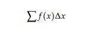
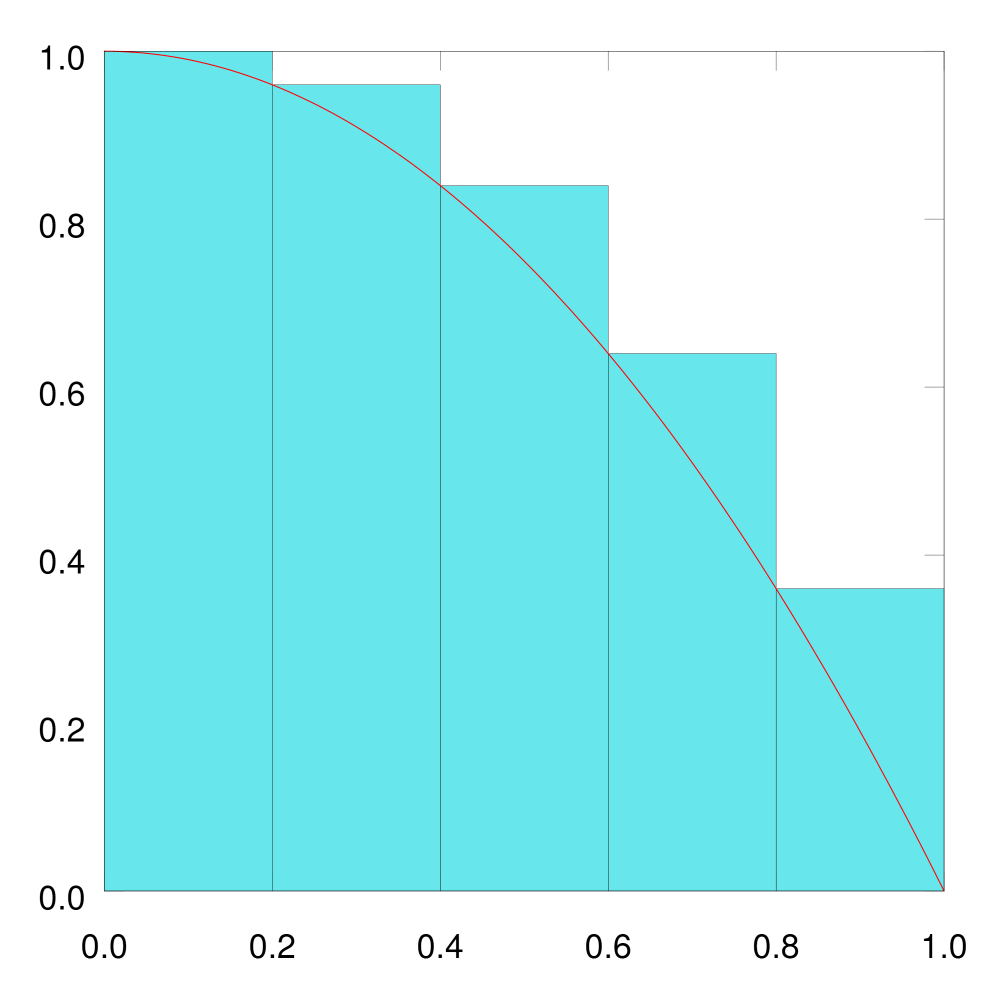
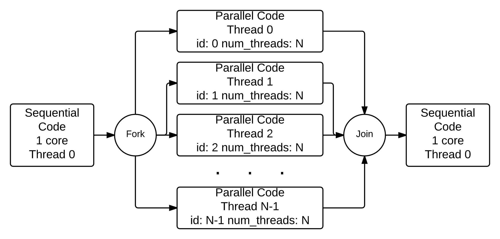

Welcome to your OnRamp workspace. Have fun!
More parallel processors can be used to model a bigger problem in the same amount of time it would take fewer parallel processors to model a smaller problem. A common analogy to this is that one person in one boat in one hour can catch a lot fewer fish than ten people in ten boats in one hour.
As the number of processors devoted to the problem increases, the advantages of parallelism diminish as the serial regions become the only parts of the code that take significant time to execute
Bigger problems can be modeled in the same amount of time as smaller problems if the processor count is increased.
Equivalence classes of important applications of scientific computing. Applications are grouped into dwarfs based on their computation
and communication patterns. When an application is run in parallel, a certain percentage of time is spent performing calculations,
while another percentage is spent communicating the results of those calculations.
Approximating the area under a curve falls into the
MapReduce dwarf. Applications in this class are characterized by a single
function that is applied in parallel to unique sets of data. In the case of
area under a curve, the function is simply the calculation of the area of a
rectangle (a number that you specified). In MapReduce applications,
after the calculations have been mapped to the execution flows, they are
communicated to a single execution flow (usually Thread 0),
where they are reduced. In the case of area under a curve, this "reduction"
takes the form of a summation. Applications in the MapReduce dwarf are
embarrassingly parallel because the calculations can be performed in their
entirety without need for communication in between. Communication
happens once, at the end, to perform the reduction.
A Riemann sum is a summation that takes the form:
Riemann sums can be used to approximate the area under a curve by dividing the area into multiple component shapes and summing their areas. The specific Riemann method explored in this module involves dividing the domain of integration into several rectangles. The height of an arbitrary rectangle is given by f(x) and the width is △x. The sum of the areas of the rectangles formed by this method is the approximation of the area under the curve. This module considers the Left Riemann sum, in which f(x) indicates the height of the left-most side of each rectangle. A pictorial example below.
More parallel processors can be used to model a bigger problem in the same amount of time it would take fewer parallel processors to model a smaller problem. A common analogy to this is that one person in one boat in one hour can catch a lot fewer fish than ten people in ten boats in one hour.
Since, typically, a single workhorse for-loop is used to generate the repeated and independent simulations of a Monte Carlo Algortihm, the numerous simulations are independent of each other. This means they can be easily split among multiple processing units. A problem such as this, where little effort is required to separate the problem into parallel tasks is known as "embarrassingly parallel"
Computers cannot produce true random numbers. Rather, the standard library random number generator takes some relatively random 32-bit or 64-bit integer input, called the seed, and transforms it sequentially to produce astream of pseudo-random numbers. A random number generator is created with the seed as input to a function called srand(), and each time a new random number is requested using the rand() function, the integer pattern is changed to produce a new number. However, it is important to realize that for a given input seed a pseudorandom number generator function such as rand() creates the same sequence of numbers every time.
A common mechanism for running code on multiple cores simultaneously is to start threads that can execute part of our code independently and in parallel on separate cores, sharing data values in memory if needed. When a program using threads begins execution, it is always running on a single main thread, which we conceptually label as thread 0. Then within the code we can designate that more threads should start executing in parallel along with thread 0. We call a point in the code where multiple threads are executing concurrently a fork of those threads. Then when they are done executing, we think of them as joining back with the main thread. Conceptually, this looks like this
